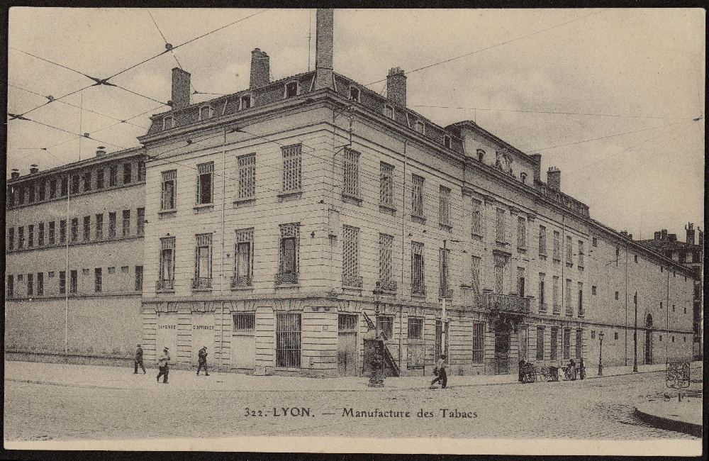
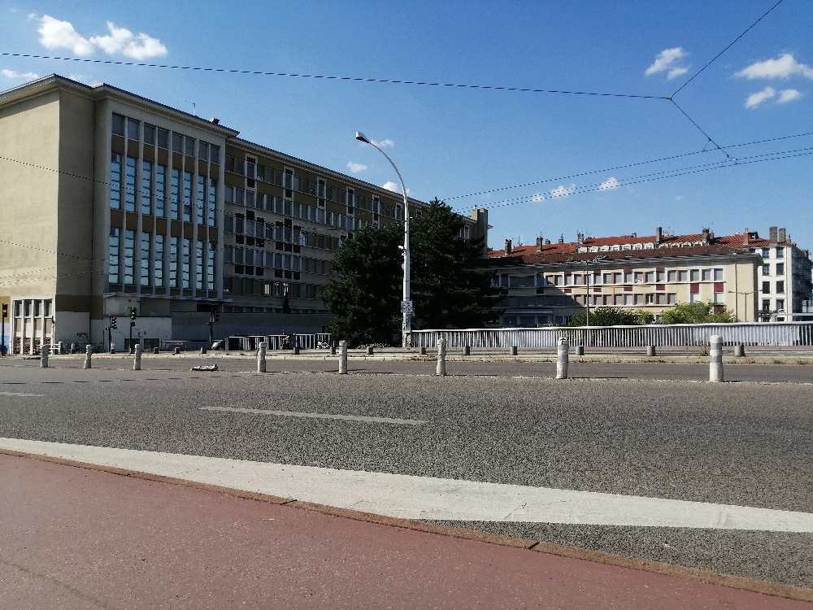
La manufacture des tabacs de Perrache
Lyon, 2e arr.
Deux bâtiments ont abrité successivement la Manufacture des tabacs de Lyon. Le premier, installé dans une ancienne indiennerie (lieu de production d’étoffes de coton peintes ou imprimées), était situé à Perrache à l'angle du quai Gailleton et
du cours de Verdun.
C'est l'emplacement de l’actuel lycée Juliette-Récamier.
En raison de la production insuffisante et de la vétusté des locaux, la construction d'une nouvelle manufacture est lancée à Monplaisir en 1912. La manufacture de Perrache servira d’entrepôt jusqu'en 1932 puis sera démolie en 1938.
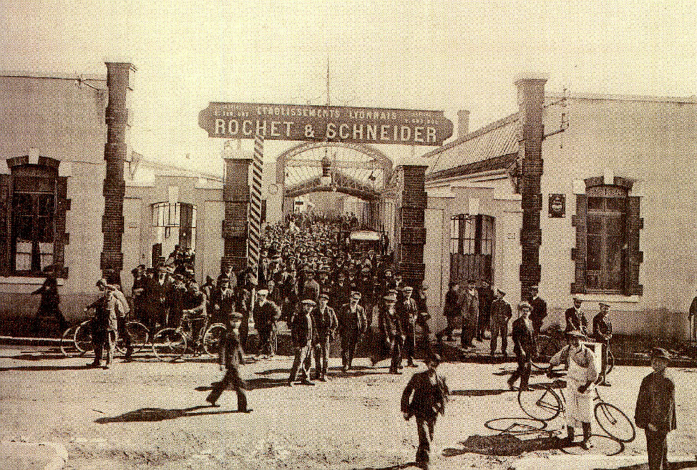
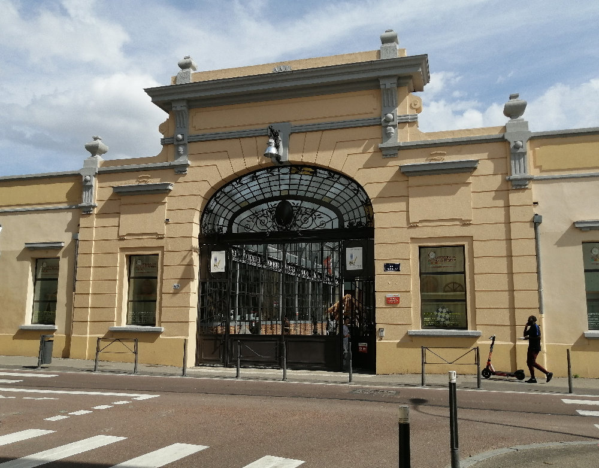
L’usine Rochet-Schneider-Zénith
Lyon, 8e arr.
Ce bâtiment, qui accueille aujourd’hui la Fédération Compagnonnique - Compagnons du Tour de France, a été inauguré en 1912. Il fut d’abord l’usine de construction automobile Rochet-Schneider-Zénith.
Fondée en 1889, l’entreprise se développe en passant de la construction de cycles et tricycles à l’automobile.
Après-guerre, la production s’oriente d’abord vers la voiture de tourisme puis vers les camions diesel et aux autobus des transports urbains lyonnais. Après des difficultés financières, la construction de véhicules cesse en 1950. L’entreprise est absorbée par la société Marius Berliet en 1959, qui elle-même fusionne en 1978 avec Renault-Véhicules-Industriels.
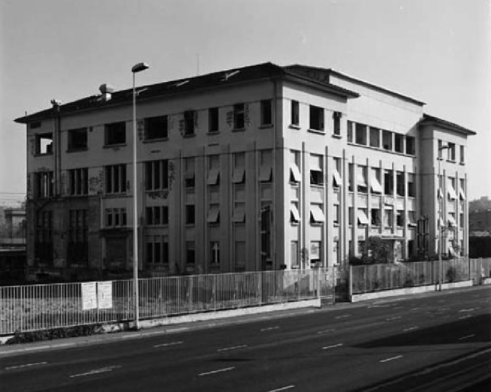
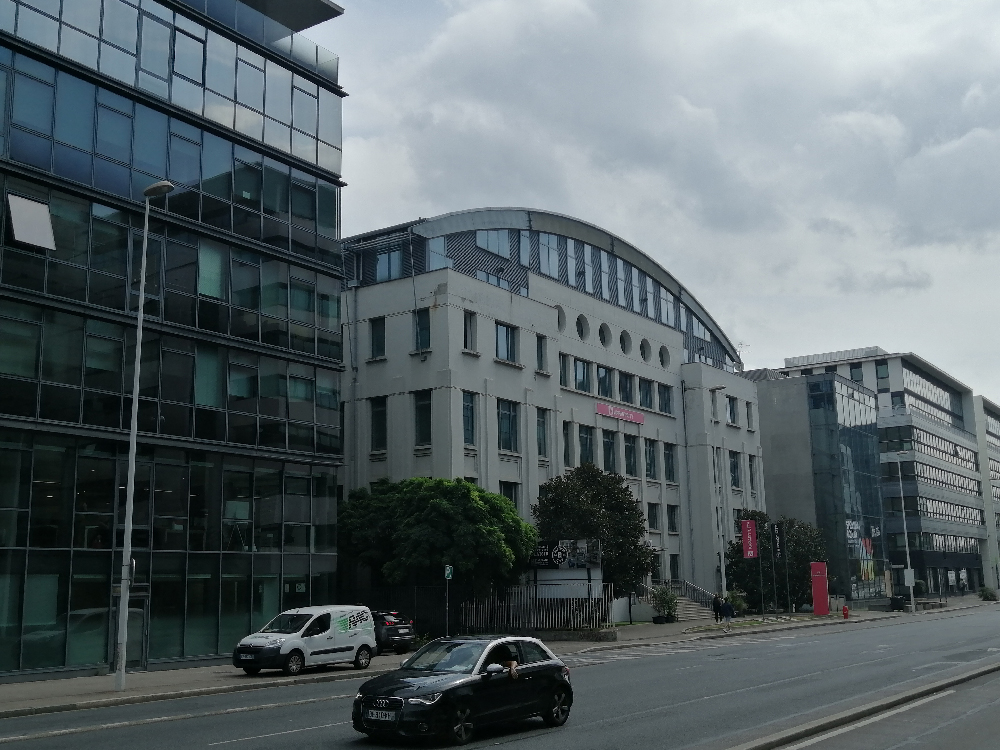
La Compagnie Industrielle Bâloise (CIBA)
Lyon, site de la Part-Dieu, 3e arr.
La Compagnie Industrielle Bâloise est une entreprise de produits pharmaceutiques suisse. Elle s'est développée à l'étranger dès le début du 20e siècle. Elle s’installe à Lyon, notamment dans ce bâtiment, construit en 1930, situé entre le boulevard Vivier-Merle et la ligne de chemin de fer, et à Saint-Fons.
Les sites lyonnais cessent leurs activités dans les années 2000 et le site de Part-Dieu est désaffecté puis vendu.
Le promoteur lyonnais Cardinal reconvertit l’un des bâtiments en une résidence de tourisme d'affaires. Les autres bâtiments sont démolis et des immeubles de bureaux sont construits.
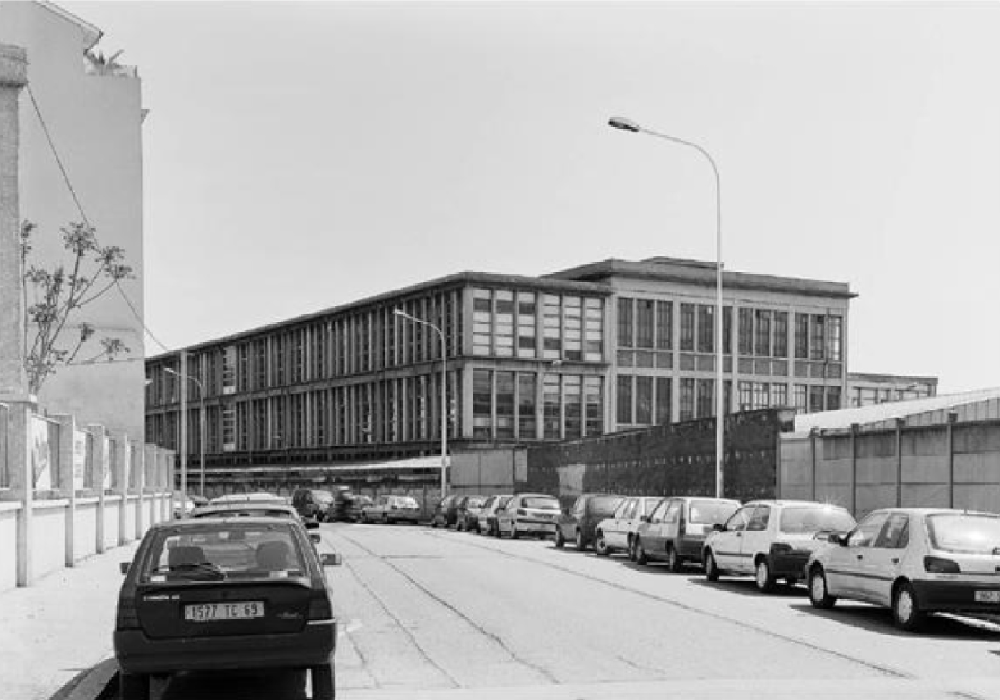
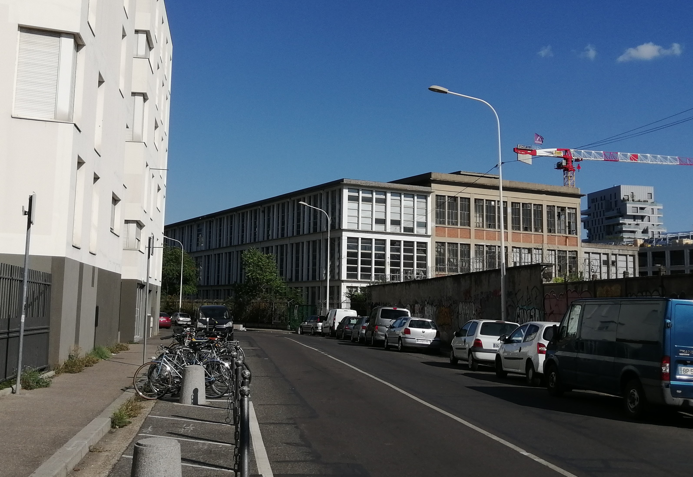
La Compagnie générale des câbles lyonnais
Lyon, 7e arr.
En 1897, la compagnie installe une usine à Gerland pour y fabriquer des câbles, notamment haute tension. En 1925, cette société devient une branche de la Compagnie Générale d'Electricité, elle est alors pionnière dans l'industrie des conducteurs isolés. En 1981, elle devient Alcatel-Câble, et le siège social est alors transféré à Clichy.
En 2000, elle est rachetée par le groupe Nexans qui installe à Lyon un centre de recherche fondamentale, la production restant à Gerland. La société appartient aujourd’hui à l'association d'entreprises AETG (Association Entreprise Technopole) de Gerland.
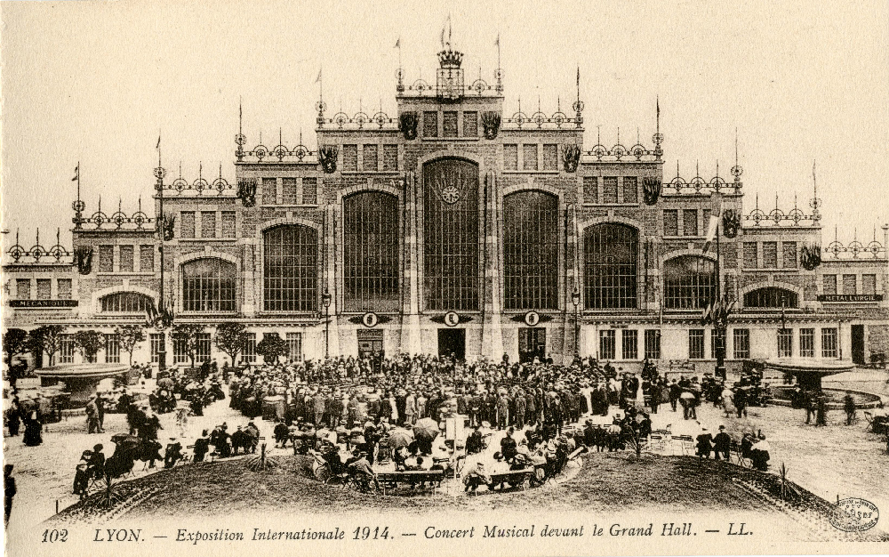
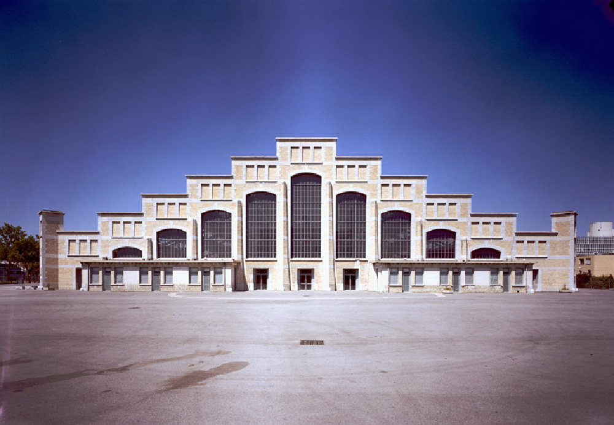
Les abattoirs de la Mouche
Lyon, 7e arr.
Construits dans le quartier de Gerland, les nouveaux abattoirs viennent remplacer ceux de Perrache. Sur un site de 25 hectares, l’architecte Tony Garnier conçoit des abattoirs modernes et fonctionnels composés d’abattoirs et d’un marché aux bestiaux connu aujourd’hui comme la halle Tony Garnier. Ils fonctionneront jusqu’en 1967.
Les bâtiments sont ensuite désaffectés puis détruits, à l’exception de quelques pavillons et la halle entièrement rénovée puis réhabilitée à partir de 1988. Sa vaste structure métallique accueille aujourd’hui une salle de concert et d’évènement de 17 000 m².
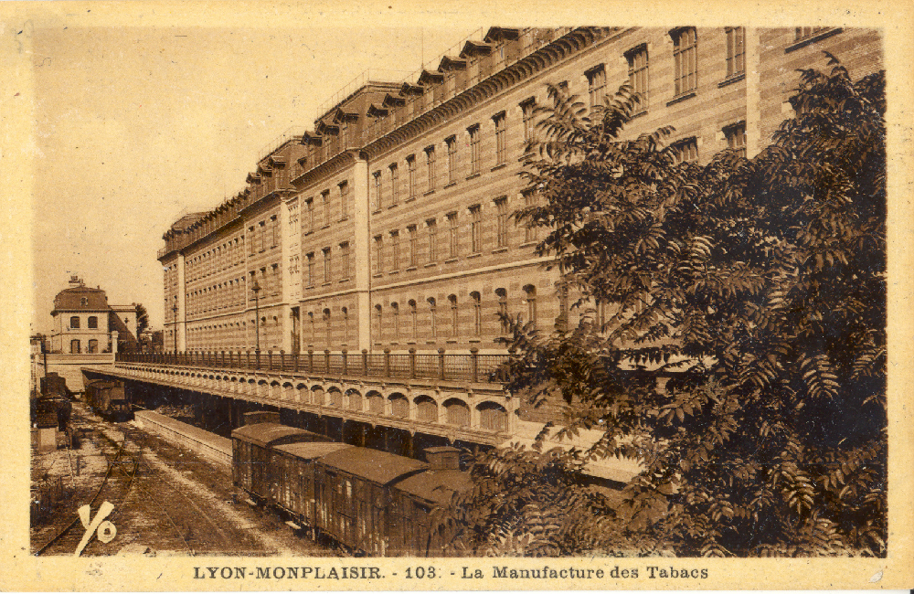
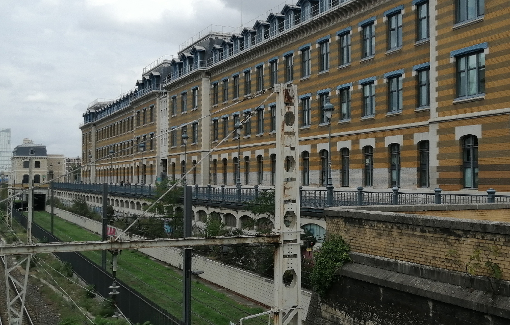
La manufacture des tabacs de Monplaisir
Lyon, 3e arr.
Le bâtiment a été réalisé de 1912 à 1932 pour accueillir une nouvelle manufacture des tabacs en remplacement de celle de Perrache.
L’usine démarre, dès 1927, son activité de fabrication de cigarettes dont la célèbre Gauloise et compte jusqu’à 700 employés.
À son apogée, elle produit plus de 7 millions de cigarettes par jour.
Elle fonctionne jusqu'en 1988 et abrite aujourd’hui l’Université Jean Moulin Lyon 3, qui accueille sur ce campus diverses facultés ainsi que la bibliothèque universitaire.
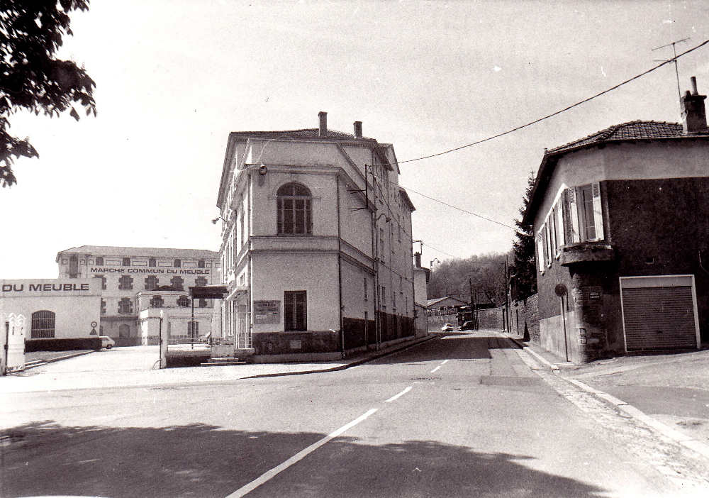
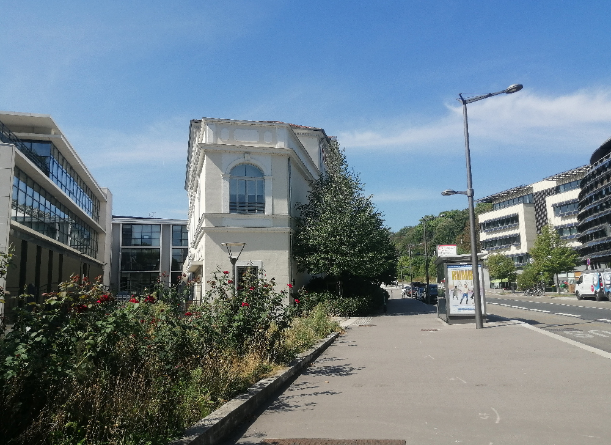
L’usine Rivoire et Carret
Lyon, 9e arr.
Rivoire et Carret s’installent en 1910 à Vaise pour fabriquer des pâtes à base de semoule de blé dur qui, pour la première fois, sont proposées dans un paquet avec poids net garanti et sous le nom d'une marque pour laquelle on fait de la réclame.
C’est un succès, les productions explosent et l’entreprise familiale perdure jusqu’en 1971 avant de fusionner avec d’autres marques et de quitter Lyon.
Aujourd’hui, l’ancienne usine accueille la Villa Créatis, siège d’Unitex, l’union inter-entreprise textiles.
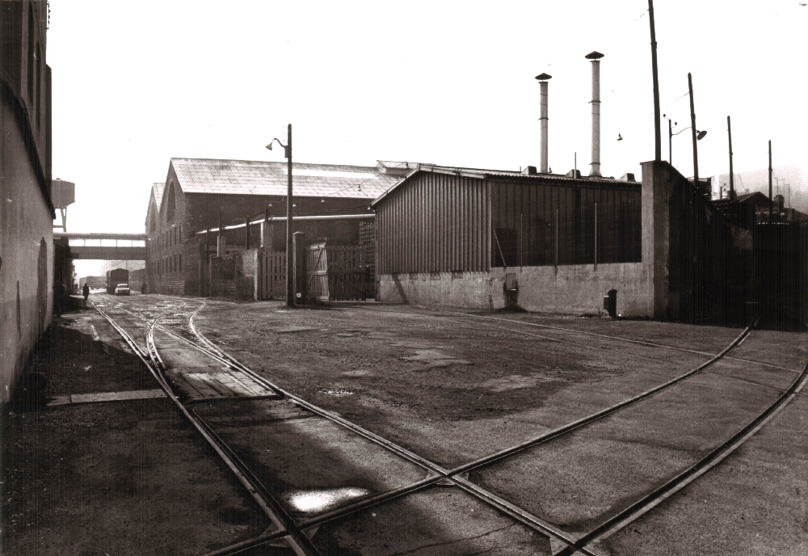
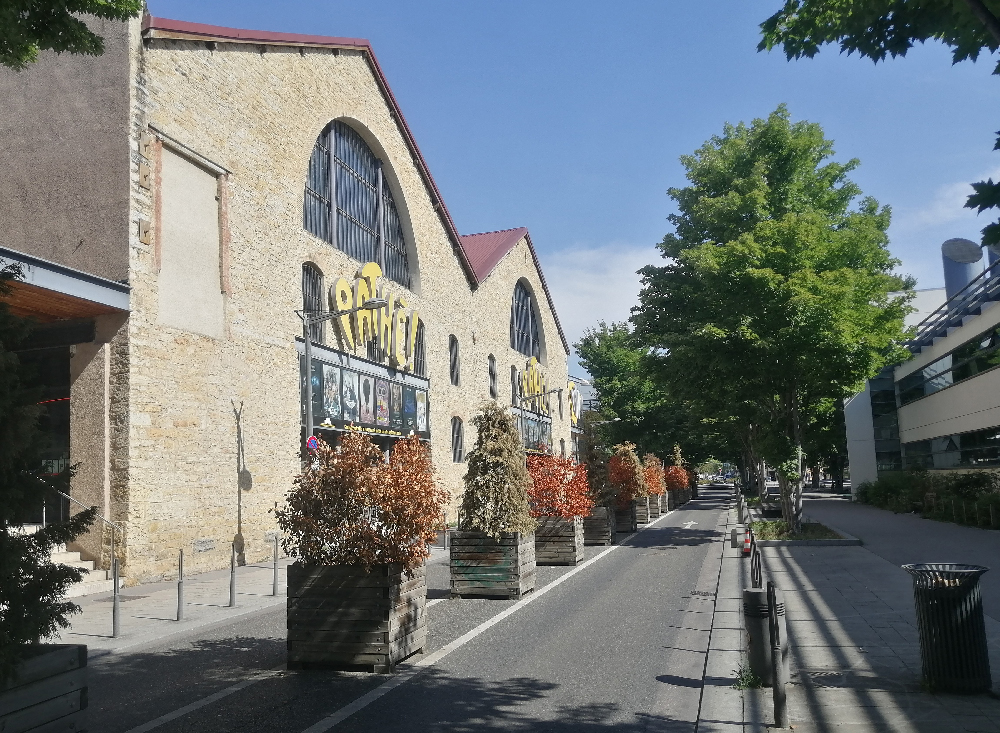
L’usine Falcot Mairet Cie
Lyon, 9e arr.
L'usine d'instruments de mesure Falcot, Mairet et Cie, s'installe à Vaise vers 1876. Spécialisée dans les ponts à bascules pour voitures et wagons, elle devient le fournisseur officiel des chemins de fer français et étrangers.
Elle fabrique également des bascules portatives et des balances de comptoir jusqu’en 1930, date à laquelle elle cesse son activité.
De 1934 à 1990, le site est occupé par la société d’embouteillage Guichard-Perrachon-Casino. Le bâtiment est ensuite laissé à l’abandon jusqu’à l’installation du cinéma Pathé-Vaise en 2008 après des travaux de restauration.
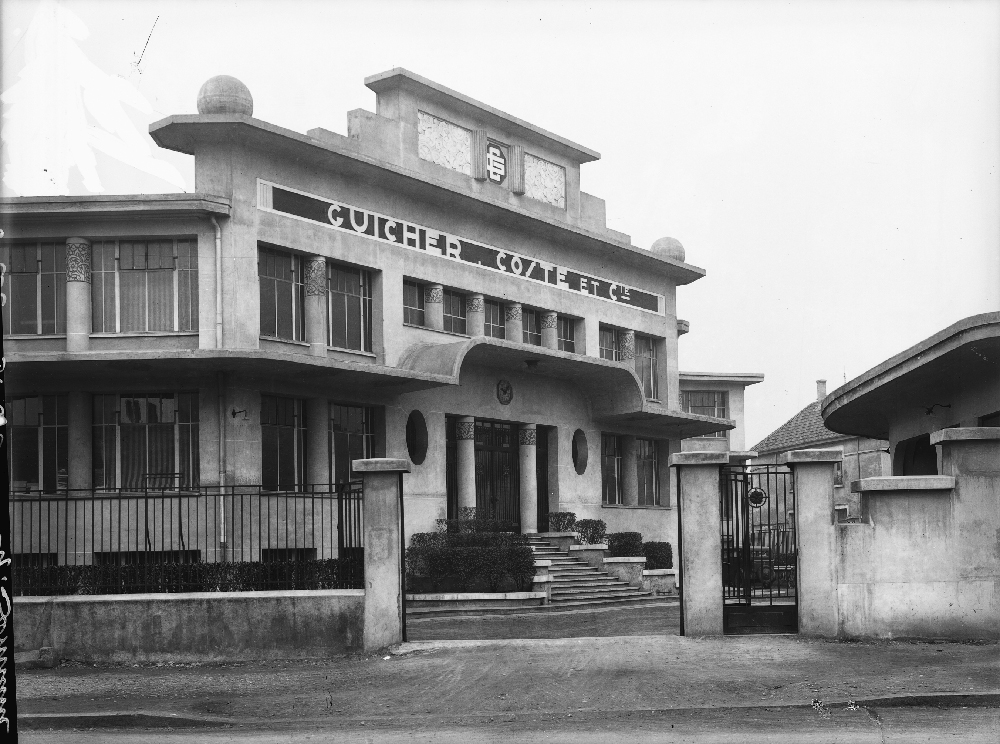
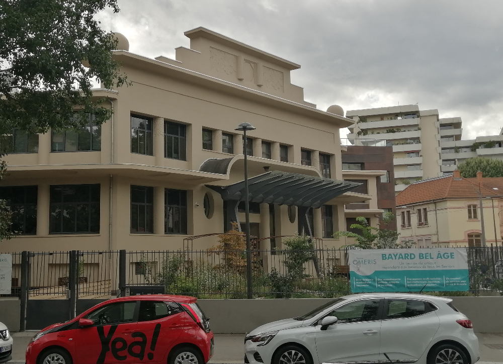
L’usine Guicher et Coste
Villeurbanne
Julien Guicher et Auguste Coste fondent l'usine Bayard en 1919, une des premières manufactures de vêtements.
Cette société bâtit sa réputation sur les vêtements de qualité, de confort et de solidité. D’abord installés avenue Roger-Salengro les ateliers de confections déménagent en 1928 au cœur du quartier du Tonkin, avenue Condorcet.
La plupart des employés sont des ouvrières, couturières qui produisent des vêtements pour hommes. Les ateliers se délocalisent à Saint-Chamond en 1997, le site est alors réhabilité, il accueille aujourd’hui la résidence pour personnes âgées « Bayard Bel Age ».
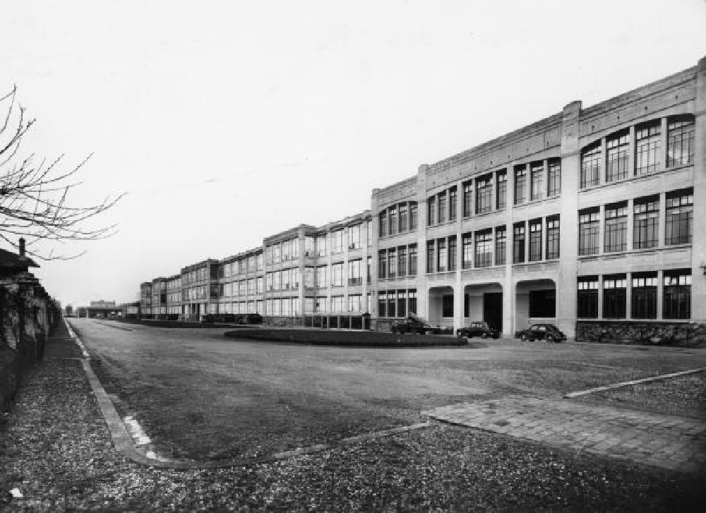
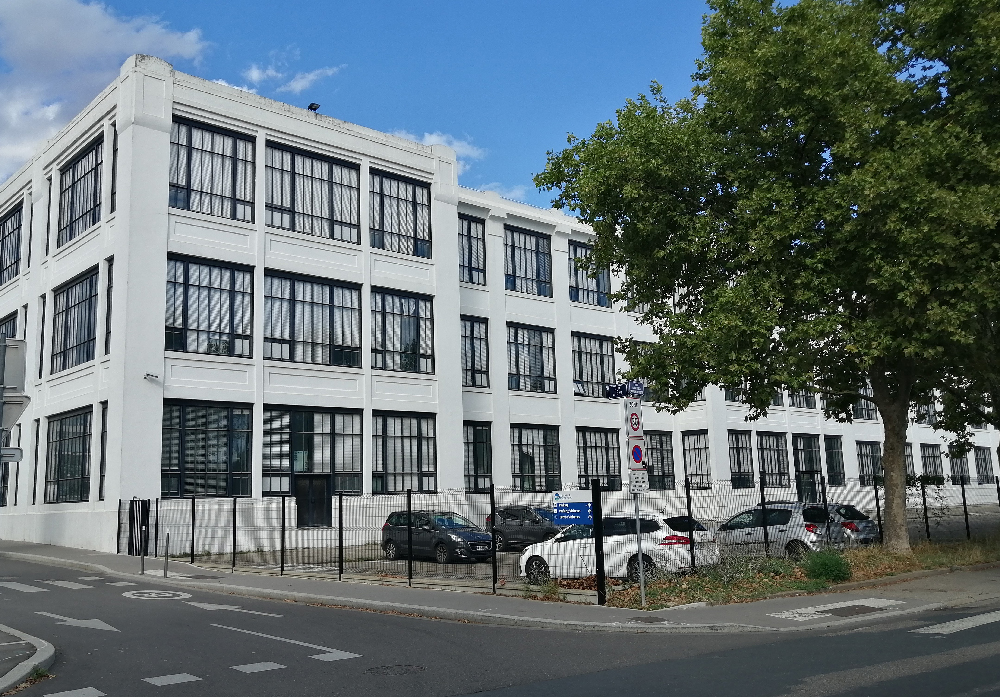
L’usine Gillet – TASE
Vaulx-en-Velin
Construite en 1925, cette usine textile basée à Vaulx-en-Velin dans le quartier du Carré de soie est un site de production réunissant autour de l’usine, des logements, des équipements sociaux, éducatifs, et sportifs.
Propriété de la famille Gillet, elle est spécialisée dans la transformation de cellulose en soie artificielle.
En 1935, elle prend le nom de TASE (Textile artificiel du Sud-Est). L'usine, propriétaire de 76 ha, a employé jusqu'à 3000 salariés. Son activité cesse en 1980. Inscrite au titre des monuments historiques depuis 2011, elle a été rachetée par un promoteur qui, après des travaux de réhabilitation, propose des espaces de bureaux et des immeubles d’habitation.
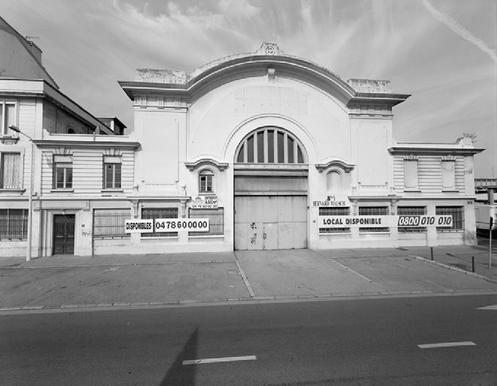
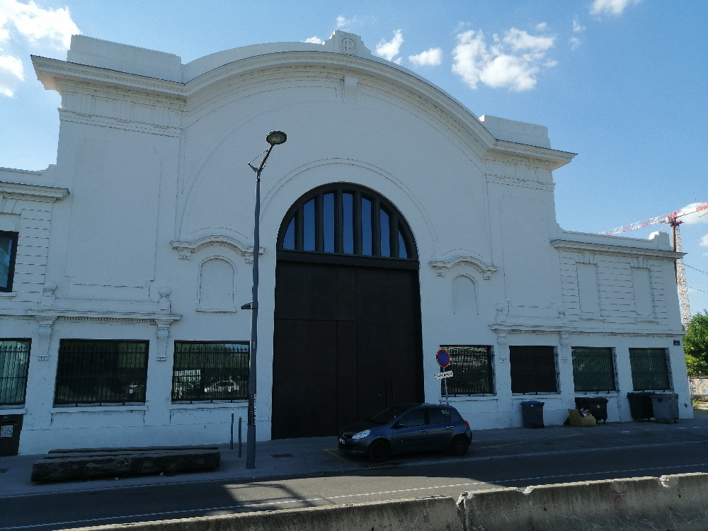
La halle Girard - H7
Lyon, 2e arr.
La halle située à la pointe Sud de la Confluence est un vestige du marché-gare aujourd’hui démoli.
Construit entre 1854 et 1857, ce bâtiment était une chaudronnerie d’atelier de mécanique.
Racheté au début du 20e siècle par la famille Dulac et Nas, le bâtiment a connu des modifications avec l’ajout d’une façade art-déco permettant de cacher les halles depuis le quai.
Aujourd’hui, ce bâtiment participe du réaménagement du quartier Confluence. Il accueille des acteurs de la filière numérique lyonnaise, des espaces d’évènementiel et une halle à manger ouverte au public.
Sources et crédits
Reproductions et vues anciennes
1.2 : Manufacture des tabacs Perrache : Musée d’histoire de Lyon –Gadagne, inv. 76.2.196
2.2 : Rochet Schneider : Musée d’histoire de Lyon – Gadagne, fonds Tabey, 1908
3.1 : Usine CIBA : Patrimoine AURA IVR82_20036901831X – Photo Didier Gourbin, fin 1990
4.1 : Les câbles de Lyon : Patrimoine AURA IVR82_20016903048P – Photo Martial Couderette, vers 2000
5.3 : Abattoirs la Mouche : Musée d’histoire de Lyon – Gadagne, fonds Tabey, 1914
6.3 : Manufacture des tabacs : Musée d’histoire de Lyon – Gadagne, fonds Tabey, 1930
7.3 : Usine Rivoire et Carret : Musée d’histoire de Lyon – Gadagne, fonds Tabey, 1977
8.2 : Usine Falcot Mairet : Musée d’histoire de Lyon – Gadagne, fonds Tabey, 1976
9.1 : Usine Guicher et Coste : Bibliothèque municipale de Lyon / P0546 SVB 202, Fonds Sylvestre, 1930
10.2 : Usine Tase : Bibliothèque municipale de Lyon / P0900 008 00065, vers 1950
11.2 : Halle Girard : Patrimoine AURA IVR82_20016900677V – Photo Martial Couderette, vers 2000
Prises de vues contemporaines
Musée d’histoire de Lyon – Gadagne – Photo Alexandre Rougon, juillet à sept 2022